本来生活花好月圆水果组合
【品鉴记录】
选取当地当季新鲜水果营养丰富，水果大小、形状、色泽良好、足斤足两，入口鲜香、甜 酸适宜、水分充足，水果采取原产地直采，本来生活生鲜直送保证其新鲜度。
选取当地当季新鲜水果营养丰富，水果大小、形状、色泽良好、足斤足两，入口鲜香、甜 酸适宜、水分充足，水果采取原产地直采，本来生活生鲜直送保证其新鲜度。
【规 格】
A类配2件、B类配2件、C类配1件、D类配1件，共6件
A类配2件、B类配2件、C类配1件、D类配1件，共6件
（根据时令配送对应果品，具体以实际收到为准）
- A类：梨(6-9粒)、国产苹果(6-9粒)、柠檬(4-6粒)、李子(1KG)、甜瓜(1-2粒)、圣女果(1KG) 等
- B类：水蜜桃(6粒)、油桃(4-6粒)、龙眼(1KG)、哈密瓜(1粒)、百香果(500G) 等
- C类：进口苹果(8粒)、进口橙(12粒)、进口火龙果(2.2-2.5KG)、新疆西州蜜(1.5KG以上) 等
- D类：进口金奇异果(5-6粒)、进口牛油果(4-6粒)、台湾凤梨(1.3KG左右)、进口山竹(1KG) 等
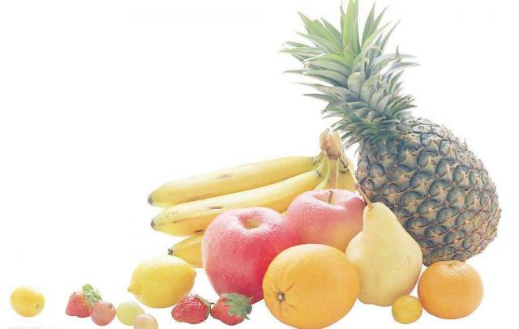
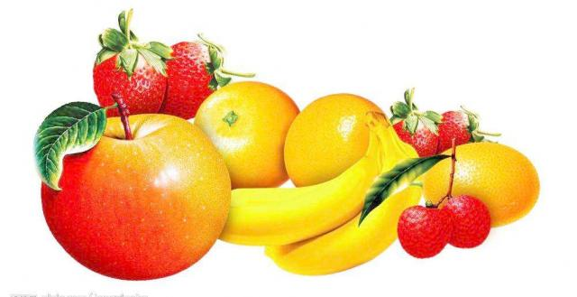
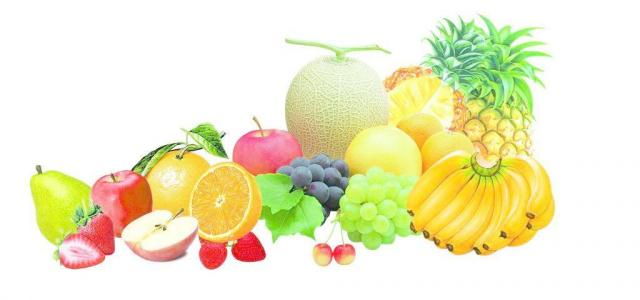
配送范围： 上海、北京、深圳、广州、天津、苏州、杭州、南京、常州、淮安、连云港、 南通、宿迁、台州、无锡、徐州、盐城、扬州、镇江、湖州、嘉兴、金华、宁波、 绍兴、泰州、温州、舟山、佛山、东莞、惠州、珠海。
【部分产品介绍】
佳沛新西兰金奇异果
佳沛新西兰金奇异果果心细、皮薄、果肉爽滑无比、甜蜜水润，外形长圆，几乎无毛。 常温可放置7天左右，冷藏可延续至20-25天。富含维生素C、E、叶酸、膳食纤维等多种营养物质。
佳沛新西兰金奇异果果心细、皮薄、果肉爽滑无比、甜蜜水润，外形长圆，几乎无毛。 常温可放置7天左右，冷藏可延续至20-25天。富含维生素C、E、叶酸、膳食纤维等多种营养物质。
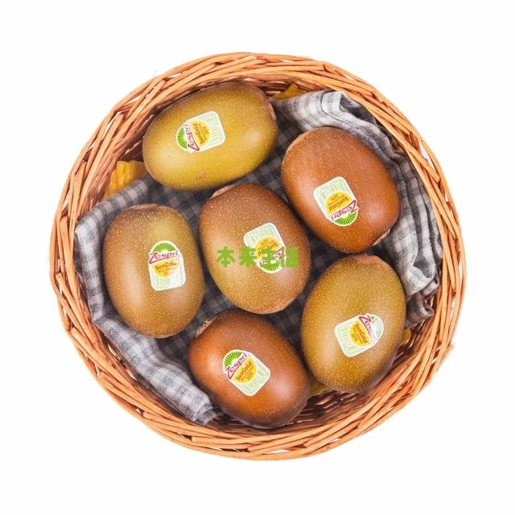
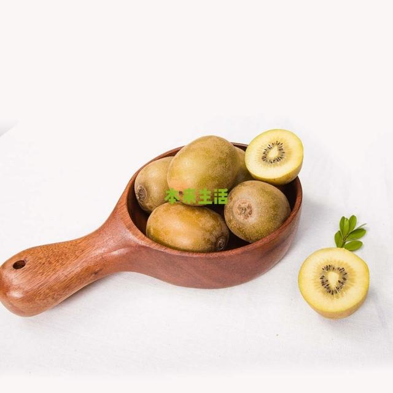
美国新奇士橙
精选美国进口新奇士橙果圆形至长圆形，橙黄色，油胞凸起，果皮不易剥离。中心柱充实； 汁味甜而香。含有大量的糖和一定量的柠檬酸以及丰富的维生素C，营养价值较高。果实还含 维生素P，具有极高的医药价值。
精选美国进口新奇士橙果圆形至长圆形，橙黄色，油胞凸起，果皮不易剥离。中心柱充实； 汁味甜而香。含有大量的糖和一定量的柠檬酸以及丰富的维生素C，营养价值较高。果实还含 维生素P，具有极高的医药价值。
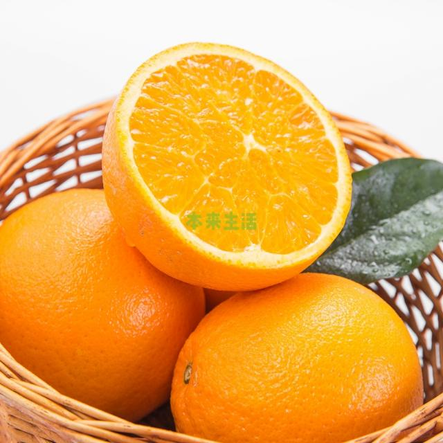
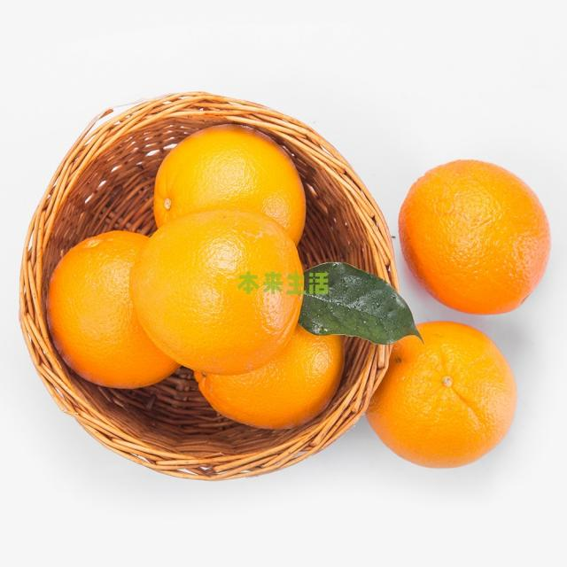
安岳柠檬
饱满结实，皮薄少核，汁多肉嫩，柠檬的酸入口虽刺激却回味清爽， 与其他食物融合，时常会有惊喜的效果。
饱满结实，皮薄少核，汁多肉嫩，柠檬的酸入口虽刺激却回味清爽， 与其他食物融合，时常会有惊喜的效果。
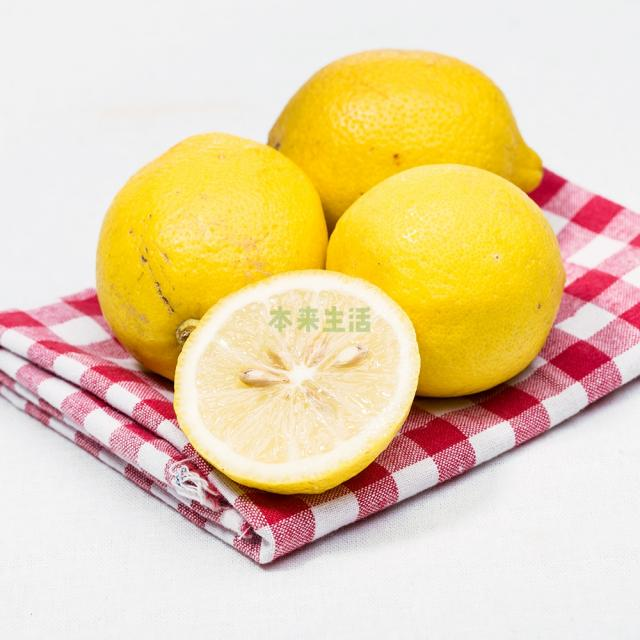
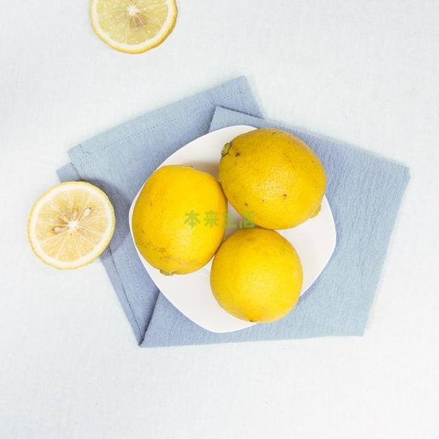
新疆西州蜜瓜
新疆西州蜜瓜拥有橘黄的果肉，成熟度越高，中心越发橘红；果肉厚亦带软滑， 果刀切下可听“咔嚓”清脆声；入口即感爽脆，多汁水润，果香清新淡雅而不腻， 盈溢口腔；味如蜜甜，顷刻回甘，生津解腻。
新疆西州蜜瓜拥有橘黄的果肉，成熟度越高，中心越发橘红；果肉厚亦带软滑， 果刀切下可听“咔嚓”清脆声；入口即感爽脆，多汁水润，果香清新淡雅而不腻， 盈溢口腔；味如蜜甜，顷刻回甘，生津解腻。
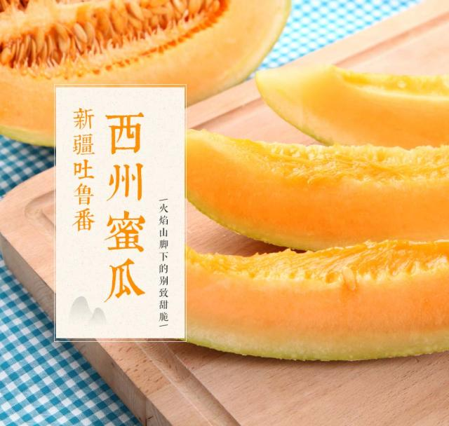
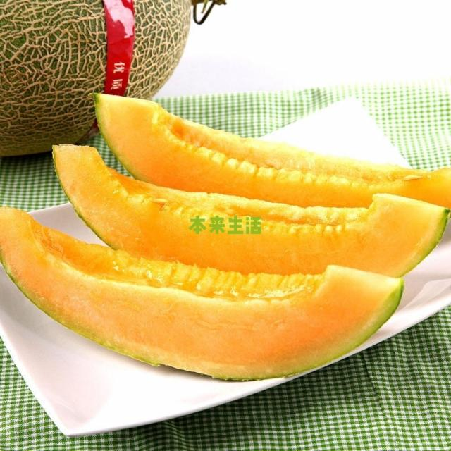
越南红心火龙果
精选越南红心火龙果，越南地属热带季风气候，常年适宜的温度和光照， 让火龙果享受充足的日光浴。火龙果外表红艳张扬，内里玫瑰色果肉， 果肉饱满绵软，口感丝滑多汁，娇艳欲滴。相比普通白心火龙果更水嫩， 口感更清爽，清甜而不腻，隐约中透露着兰花芳香。
精选越南红心火龙果，越南地属热带季风气候，常年适宜的温度和光照， 让火龙果享受充足的日光浴。火龙果外表红艳张扬，内里玫瑰色果肉， 果肉饱满绵软，口感丝滑多汁，娇艳欲滴。相比普通白心火龙果更水嫩， 口感更清爽，清甜而不腻，隐约中透露着兰花芳香。
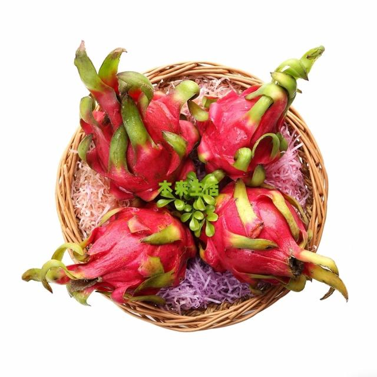
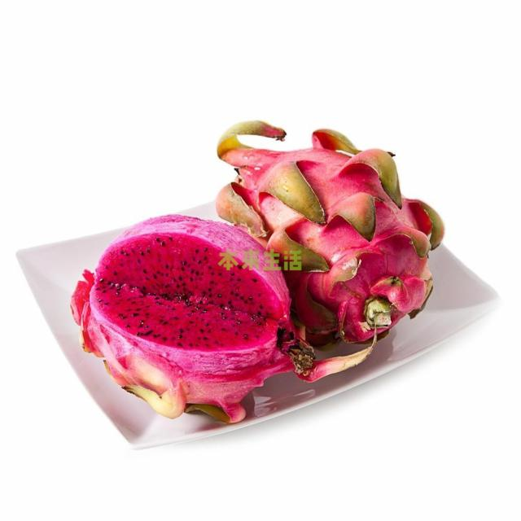
泰国进口龙眼
泰国龙眼，果中明珠，肉厚核小，圆润透亮，细嫩香滑，蜜甜多汁。 颜-如玉，圆若骊珠，赤若金丸，肉似波利，核如黑漆。 味-蜜甜，剥开薄薄的褐色表皮，蹦出的蜜汁沾满指尖，果肉莹润饱满如明珠，入口蜜甜润喉。
泰国龙眼，果中明珠，肉厚核小，圆润透亮，细嫩香滑，蜜甜多汁。 颜-如玉，圆若骊珠，赤若金丸，肉似波利，核如黑漆。 味-蜜甜，剥开薄薄的褐色表皮，蹦出的蜜汁沾满指尖，果肉莹润饱满如明珠，入口蜜甜润喉。
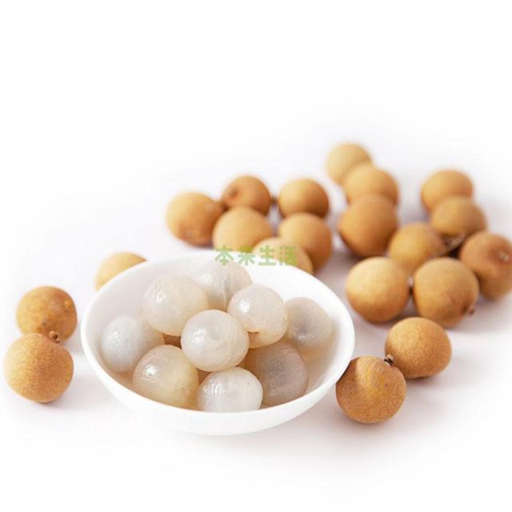
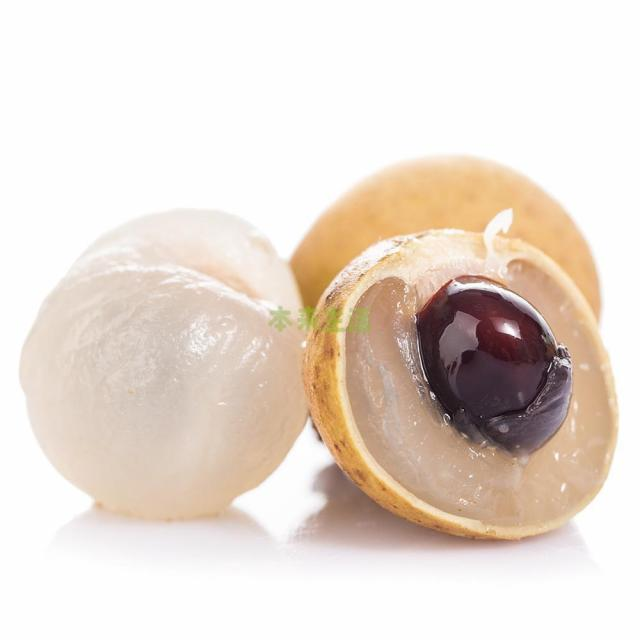
品牌介绍
本来生活网精选来自全世界的优质、健康、绿色、有机、品牌食材食品， 基地直供、冷链配送、安全检测，服务到家。我们始终将安全视为首要原则， 成立了品控委员会，围绕生产者、职能部门、认证标准、监控、检测、消费者 等环节设立6道安全屏障；坚持对每一批次的农产品进行43项常规项目抽检，可将 最常见、最易添加的重金属、农药残留、添加剂等危害拒之门外。
本来生活网精选来自全世界的优质、健康、绿色、有机、品牌食材食品， 基地直供、冷链配送、安全检测，服务到家。我们始终将安全视为首要原则， 成立了品控委员会，围绕生产者、职能部门、认证标准、监控、检测、消费者 等环节设立6道安全屏障；坚持对每一批次的农产品进行43项常规项目抽检，可将 最常见、最易添加的重金属、农药残留、添加剂等危害拒之门外。